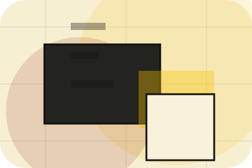
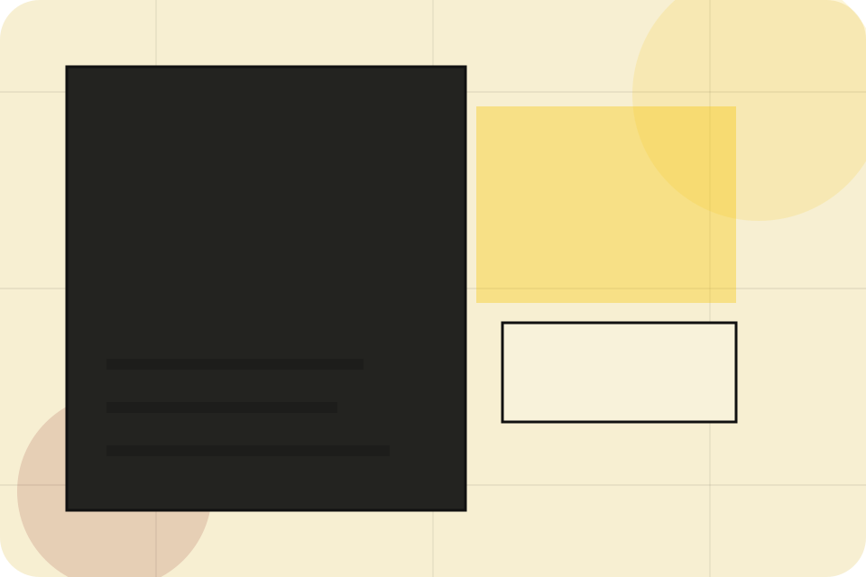
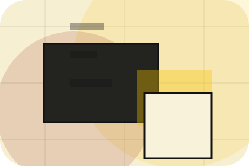
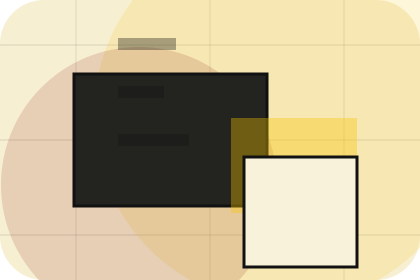
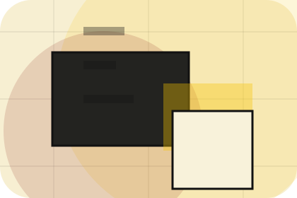
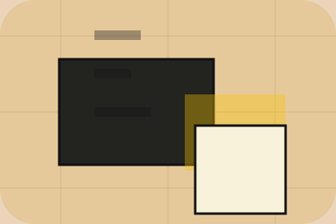

Guide
A useful entry point for visitors who need more context before they subscribe.
Newsletter / 01
Newsletter opens as a clear publishing decision hub: what Index offers, who it helps, why it matters, and which route to take first.
The first screen combines positioning, proof, primary action, and fast internal navigation, so people can act immediately or compare the rest of the newsletter route with context.
Editorial masthead hero
Select the closest route and Index keeps the next step, proof, and follow-up expectation aligned with authority and discovery.

Newsletter / 02
Promise defines the better state Index is built to create, with enough detail to make the promise believable.
A knowledge platform with magazine columns, archive search, author cards, and newsletter conversion. The section grounds that direction in concrete benefits, visible tradeoffs, and a next route visitors can use when the promise feels relevant.
Explore NewsletterPromise defines what becomes clearer, easier, or safer when Index is the chosen route.
The benefit is tied to authority and discovery, not a vague quality claim.
Visitors get a linked path to compare the promise against services, standards, or examples.
Newsletter / 03
Topics gives researching visitors a practical route into guides, checklists, and comparison material without leaving the site structure.
Each resource behaves like a useful internal link, giving cold and warm visitors a way to learn, compare, and return to the action path.
Explore NewsletterIndex structures topics around guide, checklist, and a clear next route so visitors can compare the block quickly before they subscribe.
SubscribeNewsletter / 05
Samples gives researching visitors a practical route into guides, checklists, and comparison material without leaving the site structure.
Each resource behaves like a useful internal link, giving cold and warm visitors a way to learn, compare, and return to the action path.
Explore NewsletterA useful entry point for visitors who need more context before they subscribe.
A scannable comparison aid that makes research usable before the next decision.

A route back to support, services, or contact when the visitor is ready to act.
Newsletter / 06
Benefits defines the better state Index is built to create, with enough detail to make the promise believable.
A knowledge platform with magazine columns, archive search, author cards, and newsletter conversion. The section grounds that direction in concrete benefits, visible tradeoffs, and a next route visitors can use when the promise feels relevant.
Explore NewsletterBenefits defines what becomes clearer, easier, or safer when Index is the chosen route.
The benefit is tied to authority and discovery, not a vague quality claim.
Visitors get a linked path to compare the promise against services, standards, or examples.
Newsletter / 07
Form makes the contact path concrete: what to send, how the response works, and what Index needs before visitors subscribe.
The section reduces contact friction by naming the channel, expected detail, privacy path, and response expectation instead of dropping visitors into a generic form.
Explore NewsletterIndex keeps form practical: send the key details, choose the right contact route, and know what kind of reply to expect.
SubscribeNewsletter / 08
Archive gives researching visitors a practical route into guides, checklists, and comparison material without leaving the site structure.
Each resource behaves like a useful internal link, giving cold and warm visitors a way to learn, compare, and return to the action path.
Explore NewsletterIndex structures archive around guide, checklist, and a clear next route so visitors can compare the block quickly before they subscribe.
SubscribeNewsletter / 09
Index closes the newsletter route with a clear action, a quick reminder of the value, and a low-friction way to subscribe.
Visitors who are ready can use the primary action. Visitors who are still comparing can scan the section links, proof, and support routes before they subscribe.
Explore Newsletter

Use the primary CTA when the fit is clear and timing matters.
Newsletter / 10
Index closes the newsletter route with a clear action, a quick reminder of the value, and a low-friction way to subscribe.
Visitors who are ready can use the primary action. Visitors who are still comparing can scan the section links, proof, and support routes before they subscribe.
SubscribeThe final block keeps the choice simple: act now, compare one more proof route, or send enough detail for a focused response.
Subscribeauthority and discovery
A knowledge platform with magazine columns, archive search, author cards, and newsletter conversion. Newsletter ends with a direct path to subscribe, plus enough context for visitors who still need to compare.

SubscribeInformation is provided for planning and should be reviewed for the final client, location, and operating rules.